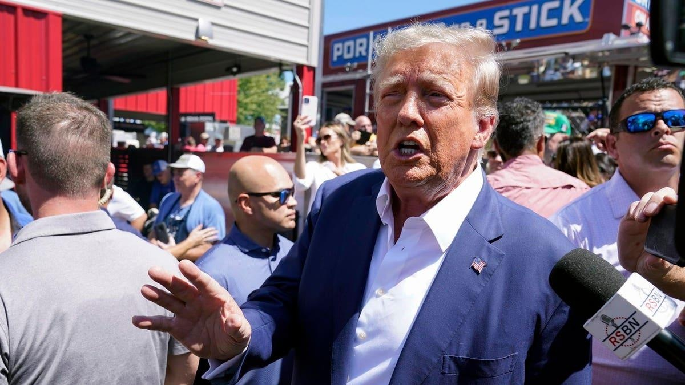

Trump-Carlson Interview Will Air At Same Time As GOP Debate TonightTopline Former President Donald Trump said Wednesday his sit-down interview with Tucker Carlson will air at the same time as Fox News’ GOP primary debate, as Trump—whose polling numbers show him crushing the field of GOP challengers—plans to skip the first debate. Key Facts Trump said his interview will be aired at 9 p.m. Wednesday night, days after he confirmed that he will not participate in the first GOP debate, adding: “SPARKS WILL FLY.” The former president did not say where his interview with Carlson will air, but the former Fox News host’s new show has appeared on X, formerly known as Twitter, after he was ousted by the network in April—sources close to the matter told the New York Times last week the interview will be online. The debate in Milwaukee will feature eight GOP candidates, including Trump’s former Vice President Mike Pence, Florida Gov. Ron DeSantis and a cast of former governors including Asa Hutchinson, Nikki Haley and Chris Christie. What To Watch For Trump also said in a Truth Social post Wednesday he plans to turn himself in to authorities in Fulton County, Georgia, on Thursday, following his indictment earlier this month on charges stemming from his alleged efforts to overturn the results of his 2020 loss to President Joe Biden. Trump—who has been the subject of both a state investigation and a Department of Justice probe—has roundly denied any wrongdoing in the aftermath of the election, and said on Thursday: “NOBODY HAS EVER FOUGHT FOR ELECTION INTEGRITY LIKE PRESIDENT DONALD J. TRUMP.” Tangent Trump and 18 co-defendants were indicted by a Georgia grand jury on August 15, marking the former president’s fourth indictment this year, following a federal indictment last month over his alleged efforts to overturn the election results. The 2024 GOP candidate was charged with 13 felony counts in Georgia, including racketeering, conspiracy to commit forgery, conspiracy to impersonate a public officer and solicitation of violation of oath by a public officer. Further Reading Trump Indicted By Fulton County Grand Jury In Georgia Election Interference Case (Forbes) |
 |